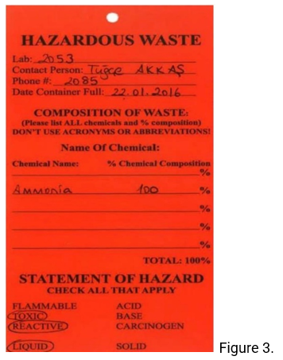

Disposal of chemical products
CHEMICAL WASTE DISPOSAL
Prior to generating chemical waste, you must classify it by determining its hazardous properties. By doing this first, you will be able to choose a compatible container to collect the waste, know how to label the container and stay within the accumulation time limits.
- 1. Flammable/Ignitable.
- 1.1. Liquids (with less than 50% water by weight) with a flashpoint of less than 60 °C (e.g., gasoline, benzene, alcohols, acetone, and ethers);
- 1.2. solids that can cause fire through friction, absorption of moisture, or spontaneous chemical changes, and when ignited burn so vigorously and persistently that it creates a hazard;
- 1.3. ignitable compressed gases.
- 2. Corrosive.
- 2.1. Liquids with a pH of less of ≤ 2 (e.g., sulphuric acid);
- 2.2. liquids with a pH ≥ 12.5 (e.g. potassium hydroxide);
- 2.3. solids, that when mixed with an equivalent weight of water, produce a solution having a pH ≤ 2 or ≥ 12.5 (e.g., hydrated lime, acetamide, cupric bromide).
- 3. Reactive.
- 3.1. Liquids or solids that are normally unstable and readily undergo change without detonation, react violently with water, or generate toxic gases or fumes when mixed with water;
- 3.2. Chemicals containing cyanide or sulphur and which generate toxic gases when exposed to pH conditions between 2 and 12.5;
- 3.3. Chemicals which are capable of detonation if subjected to a strong initiating source, or heated under confinement;
- 3.4. Chemicals capable of detonation at standard temperature and pressure. Examples: pyrophoric liquids, sodium cyanide, potassium sulphide, potassium metal, dry picric acid.
- 4. Toxic
This is the default hazard waste characteristic for chemical waste that is not flammable, corrosive or reactive. Unless you have documentation, such as a toxicity assessment or bioassay testing, which clearly shows that the waste is non-toxic, label your waste as toxic.
- 5. Oxidizer
Oxidizer is a secondary hazardous property. Indicate on the waste label the primary hazard of the oxidizer in addition to "Oxidizer" (e.g., Piranha waste is a corrosive acid and an oxidizer). Oxidizers cause or enhance the combustion of other materials and are a fire hazard if stored or transported incorrectly.
Waste Management Program
Here are the general guidelines for chemical waste disposal:
- A. Eliminate the need for disposal of unused chemicals by not purchasing more than the quantity of chemicals needed for your experiments.
- B. Try to use non-hazardous chemicals in place of hazardous chemicals whenever possible.
- C. Do not dispose of flammables, organic solvents, toxic materials, corrosive materials, reactive materials, odorous chemicals, or water insoluble materials down the drains.
- D. Dispose of ethidium bromide as a chemical hazardous waste.
- E. Place all hazardous waste containers in a secondary containment.
- F. Separate incompatible chemical waste.
- G. The containers must be kept properly and securely closed.
- H. Attach the hazardous waste tag to each waste container. Complete all information requested.
- I. When waste container is ready for pickup, put the container in the defined waste area of the laboratory.
Chemical Waste Containers
All waste containers must be labelled with the words “hazardous waste” the chemical composition of the waste, its hazards, and the accumulation start date (the date the waste is first produced). “Hazardous Waste Tag” should be completed and placed on the container when it is first designated as a waste. See Figure A.3 for an example tag:
Accumulation time limits: SU policy states that waste can only be stored in a lab for 90 days. Full containers are required to be removed from labs within 2 weeks.
Container and packaging requirements:
- A. The waste must be accumulated in containers that are in good condition and it should be compatible with the container it is stored in.
- B. The container must be kept closed except when the waste is being added to or removed from the container.
- C. Liquids must be collected in containers with screw tops or sealed lids.
- D. Do not completely fill the container. Leave the container less than 75% full.
- E. Dry waste must be double bagged in clear plastic bags.
- F. Paper towels are not hazardous waste unless hazardous chemicals are spilled on the towel.
- G. Liquids are required to be separated from solids.
- H. Mercury must be collected in a screw cap bottle. Double bag mercury contaminated items and broken thermometers in clear plastic bags (Use mercury spill kit and be aware of the danger).